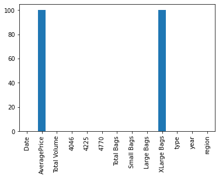

Missing data with pandas
This deals with NaN = Not a Number
Get data from csv
import pandas as pd
avocados = pd.read_csv('avocado.csv',index_col=0)
artifically delete some data
Delete 100 AveragePrice values at random rows
import numpy as np
for i in range(100):
idx=np.random.randint(0,avocados.shape[0])
avocados.iloc[idx,1]=np.NaN
avocados.iloc[idx,-4]=np.NaN
Check for missing values with isna()
avocados.isna()
| Date | AveragePrice | Total Volume | 4046 | 4225 | 4770 | Total Bags | Small Bags | Large Bags | XLarge Bags | type | year | region | |
|---|---|---|---|---|---|---|---|---|---|---|---|---|---|
| 0 | False | False | False | False | False | False | False | False | False | False | False | False | False |
| 1 | False | False | False | False | False | False | False | False | False | False | False | False | False |
| 2 | False | False | False | False | False | False | False | False | False | False | False | False | False |
| 3 | False | False | False | False | False | False | False | False | False | False | False | False | False |
| 4 | False | False | False | False | False | False | False | False | False | False | False | False | False |
| ... | ... | ... | ... | ... | ... | ... | ... | ... | ... | ... | ... | ... | ... |
| 7 | False | False | False | False | False | False | False | False | False | False | False | False | False |
| 8 | False | False | False | False | False | False | False | False | False | False | False | False | False |
| 9 | False | False | False | False | False | False | False | False | False | False | False | False | False |
| 10 | False | False | False | False | False | False | False | False | False | False | False | False | False |
| 11 | False | False | False | False | False | False | False | False | False | False | False | False | False |
18249 rows × 13 columns
Add any()
avocados.isna().any()
Date False
AveragePrice True
Total Volume False
4046 False
4225 False
4770 False
Total Bags False
Small Bags False
Large Bags False
XLarge Bags True
type False
year False
region False
dtype: bool
Use counts
avocados.isna().sum()
Date 0
AveragePrice 100
Total Volume 0
4046 0
4225 0
4770 0
Total Bags 0
Small Bags 0
Large Bags 0
XLarge Bags 100
type 0
year 0
region 0
dtype: int64
Plot it!
import matplotlib.pyplot as plt
avocados.isna().sum().plot(kind='bar')
plt.show()

Remove the rows that have NaN
avocados.shape
(18249, 13)
avocados_drop=avocados.dropna()
avocados_drop.shape
(18149, 13)
Replace the NaN with a value
avocados_rep=avocados.fillna(0)
avocados_rep.shape
(18249, 13)